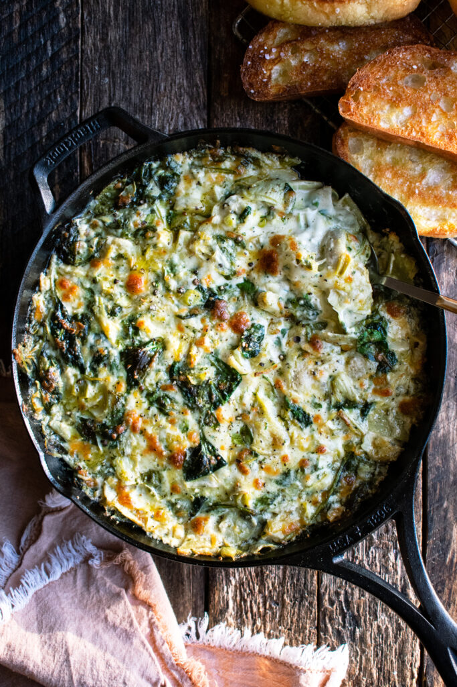

Spinach Artichoke Dip
Ingredients
- 1 ½ cups mayonnaise
- 1 tbsp Dijon mustard
- 4 cloves garlic, minced
- ½ tsp kosher s
- 1/8 tsp cayenne pepper
- 2 (14 oz) cans quartered artichoke hearts, drained + roughly chopped
- 2 oz fresh spinach
- ½ lb mozzarella cheese, shredded
- ¼ cup grated parmesan cheese
- 4 green onions, thinly sliced
- 2 tbsp chopped fresh parsley
- toasted bread or crackers, for serving
Instructions
- Preheat the oven to 375°F. Grease a 10” cast-iron skillet with a light coating of olive oil.
- Combine the mayonnaise, Dijon mustard, minced garlic, salt, and cayenne pepper in a large mixing bowl. Whisk until smooth.
- Add the artichokes, spinach, mozzarella cheese, parmesan cheese, green onions, and parsley. Mix well to combine.
- Spread the dip evenly into the skillet. Bake for about 25-30 minutes, until bubbling. Turn the oven to high broil and broil for just a minute or so until slightly golden. Remove the skillet from the oven. Let cool for about 5 minutes before serving.
- Serve with toasted bread or crackers for dipping.